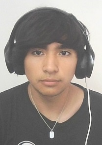

Nombre: Jeremy Antonio Santander Reinoso
Edad: 19 Años
Domicilio: 12 de octubre, La Ligua, Valle Hermoso
Telefono: +56959044947
Email Publico: Jeremypete6@hotmail.com
Email Estudio: Jeremysantander@usm.cl
Perfil:Tengo un caracter serio ambientado en un ambito laboral, intento mantener
una relacion de confianza y sana con mis compañeros de trabajo. Suelo ser Puntual, Responsable, Creativo, Siempre
intento guiar a un grupo de trabajo a una solucion optima,eficaz y que todos esten conformes, Y para finalizar, Suelo
motivar a mis compañeros.
Mis objetivos en un ambito profesional son poder llegar a un trabajo dentro de mis capacidades y habilidades
el cual permita castear las necesidades basicas en un hogar y me permita a su vez ahorrar para mis metas y mis hobbys.
Experiencia Laboral:
Educación:
Idiomas: